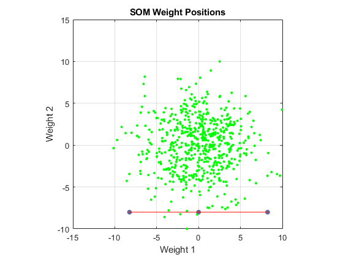
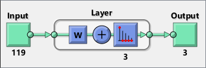
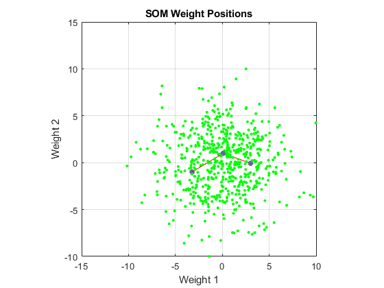
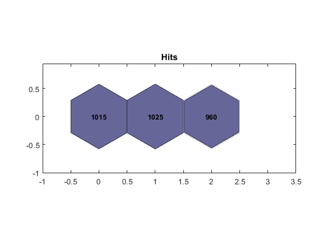
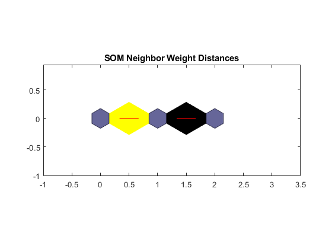

Contents
- Performing clustering with only "Self-organizing Maps"
- Part 1- Creating a fake dataset
- Part 2- Performing linear dimensionality reduction (or noise suppression) alg.
- Part 3- Performing SOFM (a non-linear and trainable dimensionality reduction alg.)
- Part 3-1- Preparing (transposing) the dataset matrix
- Part 3-2- Creating a "network" object for SOFM
- Part 3-3- Training SOFM and visualizing its performance benchmarks
- Part 3-4- Clustering dataset based on the trained SOFM
- Part 3-5- Visualization of the cluster proposals for some samples
clear; close all; clc
Performing clustering with only "Self-organizing Maps"
Self-organizing maps learn to cluster data based on similarity, topology, with a preference (but no guarantee) of assigning the same number of instances to each class. Self-organizing maps are used both to cluster data and to reduce the dimensionality of data. (from MATLAB help)
By the word "only", we mean that all the clustering process is achieved by only creating a SOFM neural network. For this purpose, the number of the desired clusters, must be the same as the number of neurons in the output layer of the SOFM neural network.
Part 1- Creating a fake dataset
nRow_fake_dataset = 3000; % it should actually be 30000, but for elapsed % running time of the code, 3000 is chosen. nCol_fake_dataset = 600; % it should actually be 6000, but for elapsed % running time of the code, 600 is chosen. temp0 = randn(ceil(nRow_fake_dataset/5), ceil(nCol_fake_dataset/5)); temp1 = repmat(temp0, 5, 5); fake_dataset = temp1(1:nRow_fake_dataset, 1:nCol_fake_dataset);
Part 2- Performing linear dimensionality reduction (or noise suppression) alg.
[coeff, score, ~, ~, explained, ~] = pca(fake_dataset); explained_variance_threshold = 99.5; % for the FFT dataset, a threshold of % 99 or 99.5 is thought to be more suitable. cumulative_explained = cumsum(explained); numFeatures = find(cumulative_explained >= explained_variance_threshold); numFeatures = numFeatures(1); reduced_dataset_by_pca = score(:, 1:numFeatures); size(reduced_dataset_by_pca)
Warning: Columns of X are linearly dependent to within machine precision.
Using only the first 120 components to compute TSQUARED.
ans =
3000 119
Part 3- Performing SOFM (a non-linear and trainable dimensionality reduction alg.)
Part 3-1- Preparing (transposing) the dataset matrix
inputs = reduced_dataset_by_pca.';
Part 3-2- Creating a "network" object for SOFM
numClusters = 3; row_nodes = 3; column_nodes = 1; % Note: the result of the product "row_nodes * column_nodes", should be % equal to "numClusters". dimensions = [row_nodes, column_nodes]; net = selforgmap(dimensions); net = configure(net, inputs); figure; plotsompos(net, inputs); grid on
Part 3-3- Training SOFM and visualizing its performance benchmarks
[net, tr] = train(net, inputs, ... 'CheckpointFile', 'sofm_chk', 'CheckpointDelay', 2); view(net) figure; plotsompos(net, inputs); grid on figure; plotsomhits(net, inputs); figure; plotsomnd(net);
30-Oct-2019 20:32:21 First Checkpoint #1: C:\Users\M_Ali\Desktop\sadra-prj\phase-2\code\sofm_chk.mat 30-Oct-2019 20:32:22 Final Checkpoint #2: C:\Users\M_Ali\Desktop\sadra-prj\phase-2\code\sofm_chk.mat   
Part 3-4- Clustering dataset based on the trained SOFM
oneHotClasses = net(inputs); classes = vec2ind(oneHotClasses);
Part 3-5- Visualization of the cluster proposals for some samples
numOfSamples = 5; disp(['Proposals for the first ' num2str(numOfSamples) ' samples:']) classes(1:numOfSamples)
Proposals for the first 5 samples:
ans =
2 3 1 1 2